20 kHz
Objectif : concevoir ma propre enceinte.
B&O · KEF · DALI · Focal · Yamaha · Hitachi
Le son et la mode : ce qui m'inspire et me fait avancer.
« Turn ideas into reality. » Deux passions, mais je m'épanouis dans toute la mécanique.


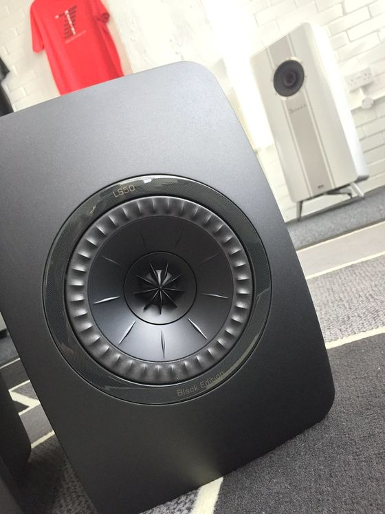

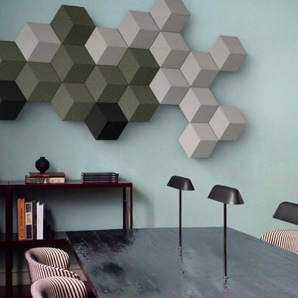

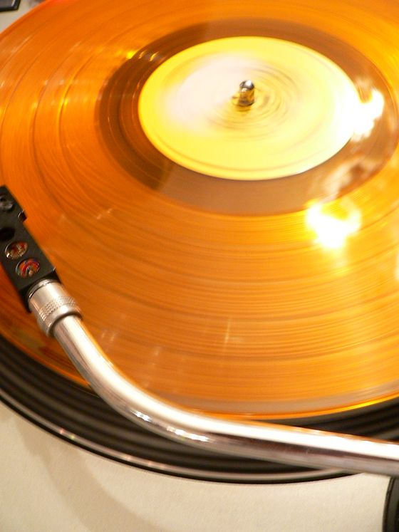
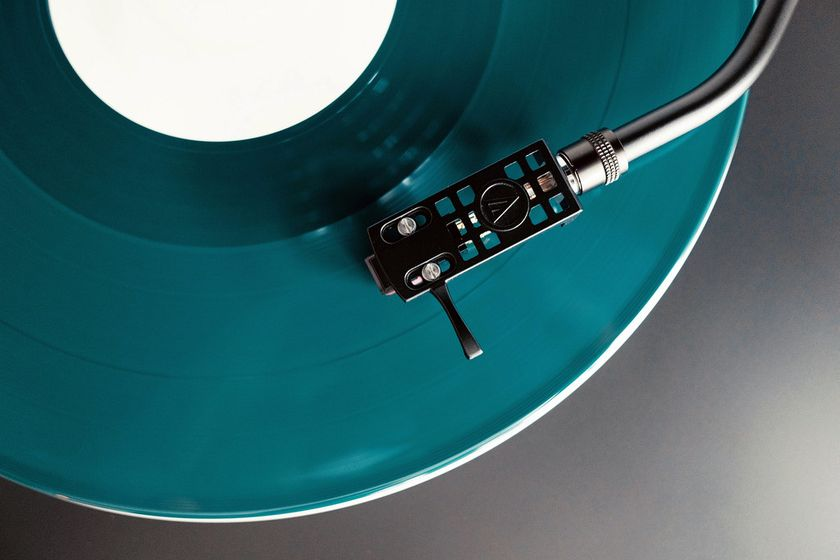
Objectif : concevoir ma propre enceinte.
B&O · KEF · DALI · Focal · Yamaha · Hitachi


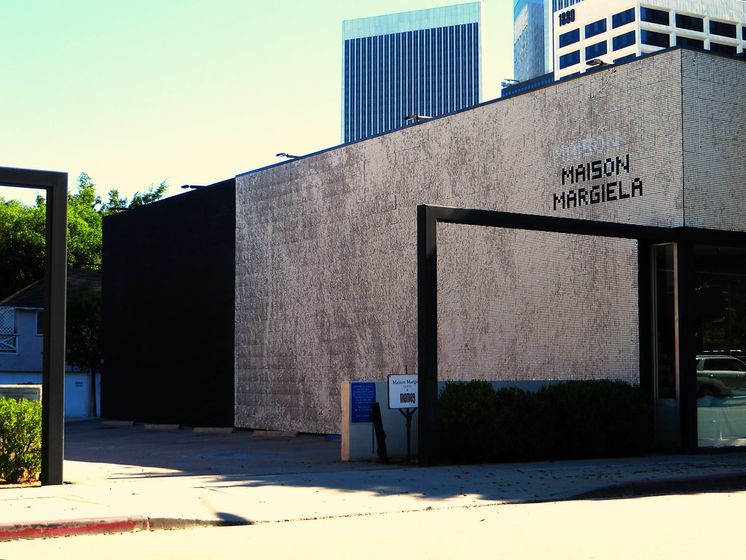


Une malle, une selle : assemblages, tolérances et matériaux choisis.
LV · Hermès · Dior · Chanel · CDG · Margiela · Jacquemus · AMI · Comme des Petits Chats

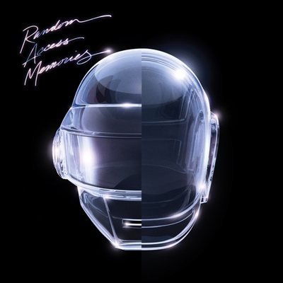

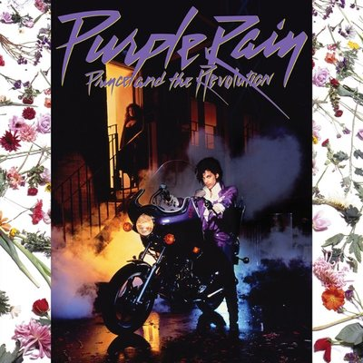
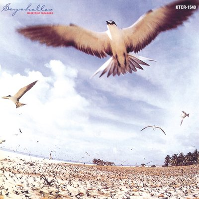

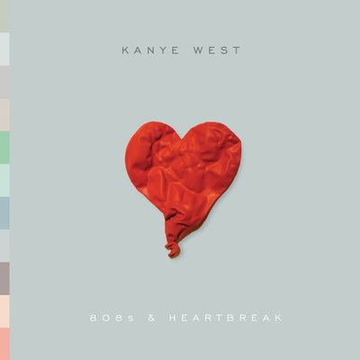

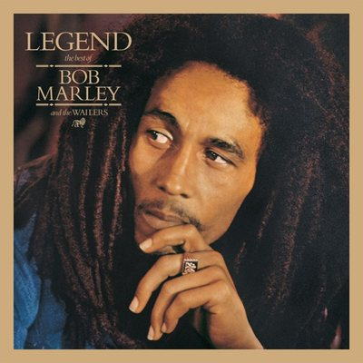
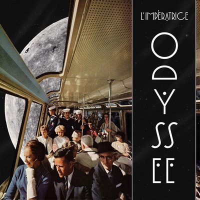
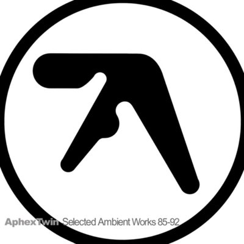


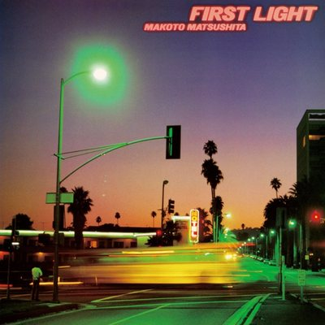
Crédits des photos : the little audio company (photo, CC BY 2.0) · jikatu (photo, CC BY-SA 2.0) · BitBoy (photo, CC BY 2.0) · mabecerra (photo, CC BY 2.0) · nimble photography (photo, CC BY 2.0) · chocolatedazzles (photo, CC BY 2.0) · TimWilson (photo, CC BY 2.0) · Dimitry B (photo, CC BY 2.0) · philos from Athens (photo, CC BY 2.0) · Brianfit (photo, CC BY 2.0) · Thomas Leuthard (photo, CC BY 2.0) · 準建築人手札網站 Forgemind ArchiMedia (photo, CC BY 2.0) · John Beans (photo, CC BY 2.0) · Ken Lund (photo, CC BY-SA 2.0) · henryjose (photo, CC BY 2.0) · dalbera (photo, CC BY 2.0). Pochettes d'album : © leurs ayants droit.